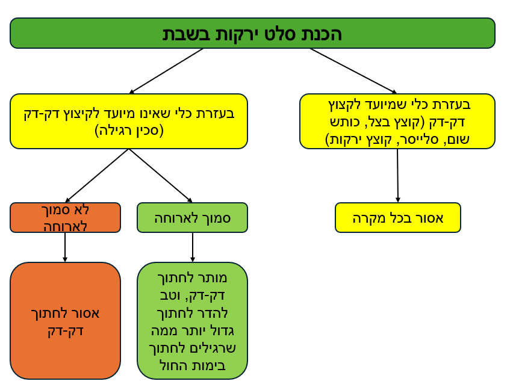

טוחן
טחינה היא חלוקת גוף אחד לחלקים קטנים. מכאן שבחיתוך ירקות לסלט עלולים לעבור על איסור טוחן, והדבר תלוי בכלי שבו נעשה החיתוך, בגודל החתיכות ובזמן החיתוך, כפי שמפורט בתרשים:

למבחן על החלקטחינה היא חלוקת גוף אחד לחלקים קטנים. מכאן שבחיתוך ירקות לסלט עלולים לעבור על איסור טוחן, והדבר תלוי בכלי שבו נעשה החיתוך, בגודל החתיכות ובזמן החיתוך, כפי שמפורט בתרשים:

למבחן על החלק